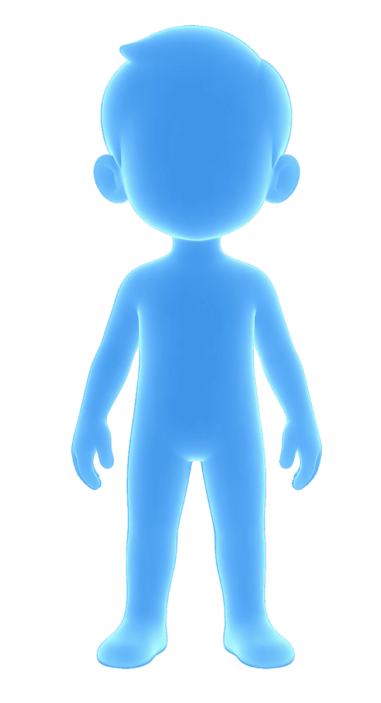
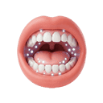
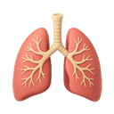
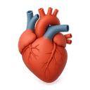
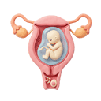

✕
Fechar
Início
Pré-Escolar
1º Ano
2º Ano
3º Ano
4º Ano
Voltar
Sistemas do Corpo
Escolhe um minijogo para começar!

STATUS_SISTEMAS: PRONTO PARA SCAN
Exploração de Sistemas

SISTEMA DIGESTIVO
A viagem dos alimentos

SISTEMA RESPIRATÓRIO
A fábrica de oxigénio

SISTEMA CIRCULATÓRIO
O motor do sangue

SISTEMA REPRODUTOR
O ciclo da vida
1
/
10
0
Missão Concluída!
Erros no Sistema:
0
REPETIR MISSÃO
OUTROS SISTEMAS
✕
✕